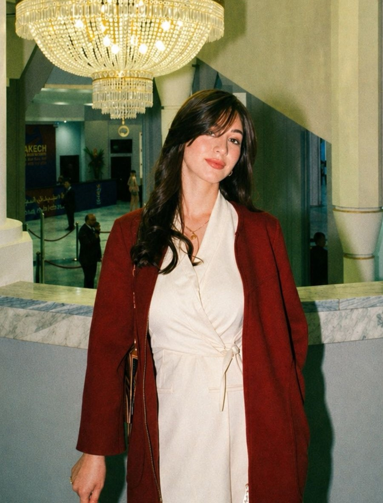

05AN was created with one vision : to redefine how fragrance is experienced. What started as a shared passion for scents and the art of leaving a lasting impression became something deeper. To us, perfume is never just a liquid in a bottle, it’s a memory, an emotion and presence that lingers long after you’re gone. Every fragrance we offer, from timeless designers to rare niche creations, is carefully selected to evoke confidence, identity, and feeling. We don’t just sell perfumes, we create experiences meant to be remembered.

Behind 05AN are two creators, Kawtar Barakat and Anass Boumahdi, first-year students in applied computer science, driven by ambition and a shared vision for the future. The name itself holds meaning: “05” reflects Kawtar’s birth date, while “AN” represents the initials of Anass. More than letters and numbers, it symbolizes a connection, two minds, one project. What began as a simple idea is now a platform where passion meets precision, bringing carefully curated scents to those who understand that fragrance is a form of identity.